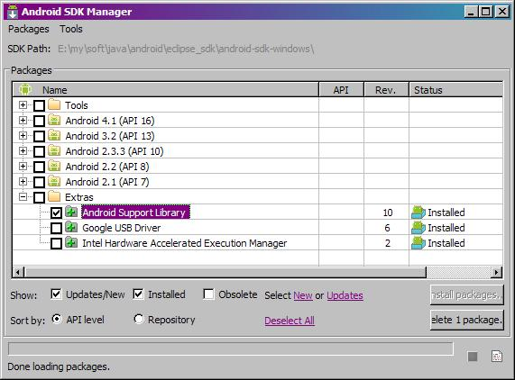
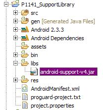
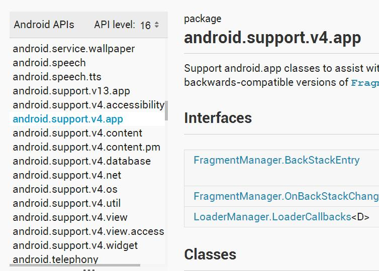
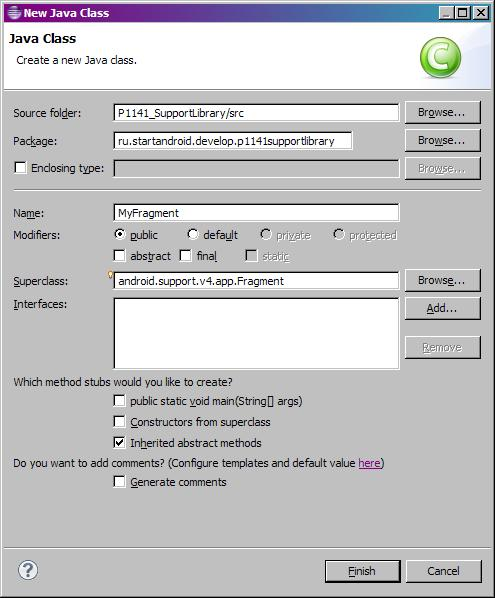
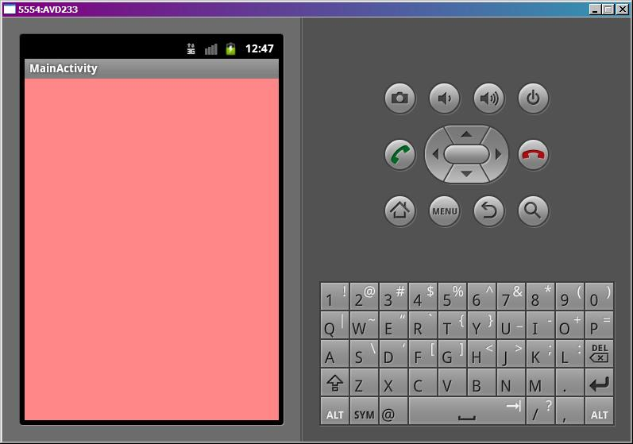
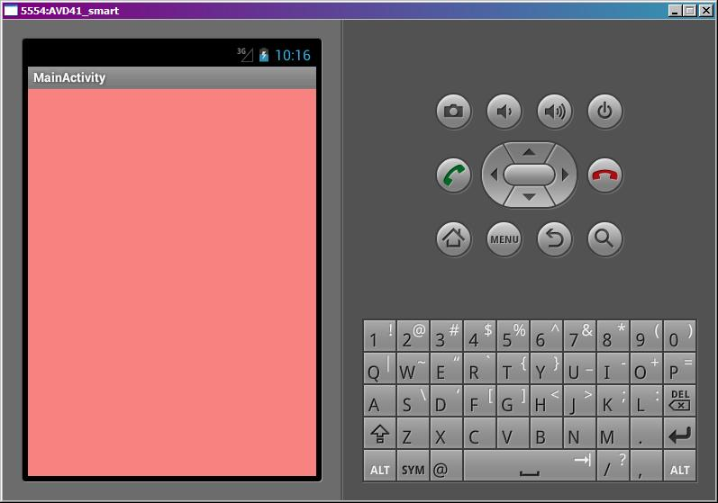

В этом уроке:
- разбираемся, зачем нужна библиотека Support Library
- на примере фрагментов используем библиотеку v4
Support Library – библиотека, которая на старых версиях Android делает доступными возможности новых версий. Например, фрагменты появились только в третьей версии (API Level 11). Если вы хотите использовать их в своем приложении, это приложение не будет работать на более старых версиях Android, т.к. эти старые версии никогда не слышали про класс android.app.Fragment. Какие тут есть выходы?
1) Добавить в код проверку версии системы и в зависимости от результата выполнять тот или иной код. Т.е. если версия 11 и выше, используем фрагменты, иначе Activity. Вполне выполнимо, но не совсем просто. Можно ошибиться и запутаться. Т.е. при запуске приложения на старых версиях приходится либо отказываться от новшеств и пользоваться тем, что есть, либо изобретать велосипед и реализовывать новшества самому.
2) Можно забить на старые версии и позиционировать свое приложение только для новых версий. Тогда теряется ощутимая часть потенциальных пользователей вашей программы. На момент написания этого материала на версии Android ниже третьей сидит 69,7% пользователей. Ощутимая такая потеря получится - больше, чем две трети! Конечно, со временем все перейдут на третью и последующие версии, и смогут использовать ваше приложение. Но к тому времени выйдут новые версии Android с новыми возможностями, вы их реализуете в своем приложении и, тем самым, снова отсеете часть пользователей. В общем, вырисовывается постоянная дискриминация пользователей по версии.
3) Использовать библиотеку Support Library. Она содержит классы - аналоги новшеств последних версий, которые будут работать на старых версиях.
На данный момент есть две библиотеки v4 и v13. Цифра здесь указывает минимальный API Level на котором можно использовать эту библиотеку. Т.е. приложение, использующее v4, может быть запущено на API Level >= 4 и ему будут доступны новшества, которые входят в эту библиотеку (например, фрагменты).
Библиотеки эти периодически обновляются, в них добавляются новые классы, реализующие новые возможности. Так что, если вы не нашли в них сейчас то, что вам нужно, вполне возможно, что это появится в будущем. Самый яркий пример – ActionBar. Его, к сожалению, в v4 пока нет. И я, честно говоря, не знаю, появится ли. Умельцы пишут свои аналоги, т.е. реализуют первый вариант из рассмотренных нами выше и предоставляют нам возможность использовать его, как третий вариант. Ведь мы вовсе не обязаны ограничиваться стандартной Support Library от Google. Можно использовать и другие библиотеки от других разработчиков. Самая популярная реализация ActionBar – это ActionBarSherlock.
Разобрались с тем, что такое Support Library и зачем она нужна. Теперь посмотрим, как ее использовать. Работать будем с v4.
Если у вас библиотека загружена, а версия ADT одна из последних, то Eclipse сам автоматически добавит в проект эту библиотеку. И вы сразу после создания нового проекта сможете ее использовать.
Если не все так радужно, то надо скачать и добавить самим. Несложный и недолгий процесс. На официальном сайте есть инструкция. И я здесь просто напишу перевод этой инструкции со своими дополнениями. Но не спешите все это проделывать! Возможно, вам это не понадобится.
Чтобы загрузить библиотеку:
Откройте SDK Manager, найдите там Android Support Library и установите ее

Библиотека v4 загрузится в папку: <путь к SDK>/extras/android/support/v4/android-support-v4.jar
Чтобы добавить библиотеку в ваш проект:
В проекте создайте папку libs. Он должна быть в корне, на том же уровне, что и res, bin и прочие. Поместите в папку libs загруженную библиотеку android-support-v4.jar. Далее, правой кнопкой на этой библиотеке в папке libs, и в контекстном меню Build Path > Add to Build Path.
Обновите манифест, указав в нем, что минимальная требуемая версия для вашего приложения – API Level 4.
android:minSdkVersion="4"
При создании нового проекта проверьте - если папка libs с библиотекой в проекте есть, то выше приведенная инструкция вам не нужна.

Из рассмотренных нами в прошлых уроках классов, библиотека содержит Fragment, FragmentManager, FragmentTransaction, ListFragment, DialogFragment.
Полный список объектов можно посмотреть, открыв API на сайте. Вот основной пакет - android.support.v4.app. Слева видны остальные.

Напишем простейший пример использования фрагмента в приложении для API Level 10.
Создадим проект:
Project name: P1141_SupportLibrary
Build Target: Android 4.0
Application name: SupportLibrary
Package name: ru.startandroid.develop.p1141supportlibrary
Create Activity: MainActivity
Создаем фрагмент.
Сначала layout fragment.xml:
<?xml version="1.0" encoding="utf-8"?>
<LinearLayout
xmlns:android="http://schemas.android.com/apk/res/android"
android:layout_width="match_parent"
android:layout_height="match_parent"
android:background="#77ff0000"
android:orientation="vertical">
</LinearLayout>Пустой красный LinearLayout.
Далее создаем класс - MyFragment. Если мы сделаем это по старинке, наследуя android.app.Fragment, то в созданном классе получим ошибку The import android.app.Fragment cannot be resolved. И это логично, т.к. в Android 4.0 (API Level 10) нет такого класса.
И, собственно, именно тут и пригодится нам библиотека v4. Будем наследовать ее класс android.support.v4.app.Fragment при создании фрагмента

MyFragment.java:
package ru.startandroid.develop.p1141supportlibrary;
import android.os.Bundle;
import android.support.v4.app.Fragment;
import android.view.LayoutInflater;
import android.view.View;
import android.view.ViewGroup;
public class MyFragment extends Fragment {
public View onCreateView(LayoutInflater inflater, ViewGroup container,
Bundle savedInstanceState) {
return inflater.inflate(R.layout.fragment, null);
}
}Правим main.xml:
<?xml version="1.0" encoding="utf-8"?>
<FrameLayout
xmlns:android="http://schemas.android.com/apk/res/android"
xmlns:tools="http://schemas.android.com/tools"
android:id="@+id/cont"
android:layout_width="match_parent"
android:layout_height="match_parent">
</FrameLayout>Только FrameLayout, который будет контейнером для фрагмента.
Далее есть один нюанс. Чтобы в старой версии Android использовать фрагменты из Support Library, нам необходимо использовать не стандартное Activity, а также из библиотеки – android.support.v4.app.FragmentActivity.
MainActivity.java:
package ru.startandroid.develop.p1141supportlibrary;
import android.os.Bundle;
import android.support.v4.app.FragmentActivity;
import android.view.Menu;
public class MainActivity extends FragmentActivity {
@Override
public void onCreate(Bundle savedInstanceState) {
super.onCreate(savedInstanceState);
setContentView(R.layout.main);
MyFragment myFrag = new MyFragment();
getSupportFragmentManager().beginTransaction()
.replace(R.id.cont, myFrag).commit();
}
@Override
public boolean onCreateOptionsMenu(Menu menu) {
getMenuInflater().inflate(R.menu.main, menu);
return true;
}
}В коде видим еще одно отличие. FragmentActivity использует метод getSupportFragmentManager (а не getFragmentManager) для получения FragmentManager. В остальном, работа с фрагментами не будет отличаться от прошлых уроков. Различие будет только в секции import. Если раньше было, например так:
import android.app.Fragment;
import android.app.FragmentManager;
import android.app.FragmentTransaction;
(это работает только на новых версиях)
то с использованием v4 будет так:
import android.support.v4.app.Fragment;
import android.support.v4.app.FragmentManager;
import android.support.v4.app.FragmentTransaction;
(это будет работать и на старых и на новых версиях)
Цель проста - работоспособность вашего приложения на старых версиях, которые ничего не знают про фрагменты. Старые версии будут использовать для работы с фрагментами классы библиотеки v4. Но, разумеется, этот код без проблем сработает и на последних версиях Android.
Все сохраняем, запускаем приложение и видим работающий фрагмент на Android версии 4.0

Ради интереса запустим его же на Android 4.1

Итого, благодаря библиотеке, один и тот же код работает на старых и новых версиях и использует возможности новых версий.